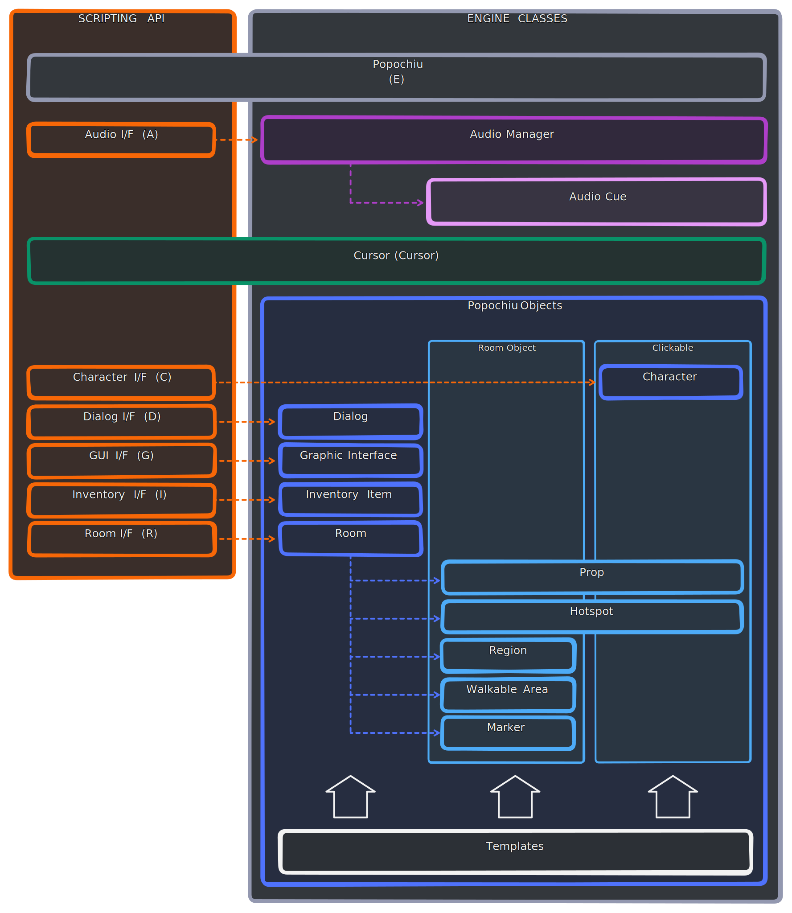

Game Engine
This is the portion of the code referenced by—and bundled with—your game. It handles all the heavy lifting, taking care of the common tasks involved in running a point-and-click adventure game.
Here is a visual representation of the plugin architecture. Read on to learn about each individual block.

The engine is also divided into several subsystems, many of which provide an API (a set of classes and functions) to be used within the game’s scripts. Most of these subsystems are made available to the developer through singleton autoloads.
Important!
Accessing engine functions via singletons is only allowed in game scripts (those located in the game folder). When developing the engine or plugin, you MUST use the access instances provided by the PopochiuUtils class, as listed in the paragraph below.
If you use a singleton in the engine or editor code, the users will face errors when they enable Popochiu in their project for the first time, and will have to restart the engine to make it work.
Popochiu Engine
Position:
engine/popochiu.gd
Singleton:E
Engine instance:PopochiuUtils.e
This is the main hub that provides control over the game’s flow and manages its initialization and runtime.
It initializes game elements, routes input, and offers functions for cross-cutting concerns such as:
- Camera control
- Savegame management
- Handling cutscenes or event queues
- Registering and managing GUI commands
It can be accessed via the E singleton in game scripts or through PopochiuUtils.e in addon scripts.
Audio Manager
Position:
engine/audio_managerprovides the bulk of the logic, whileengine/interfaces/i_audio.gdexposes an API to control it.
Singleton:A(instance ofPopochiuIAudio)
Engine instance:PopochiuUtils.a
It handles playing audio using PopochiuAudioCue objects.
It plays sound effects and music through AudioStreamPlayer or AudioStreamPlayer2D, creating these nodes at runtime if necessary. By default, it manages 6 nodes for positional streams and 5 nodes for non-positional streams.
The PopochiuAudioManager is initialized as a child of Popochiu when the game starts.
Cursor
Position:
engine/cursor
Singleton:Cursor
Engine instance:PopochiuUtils.cursor
This tiny subsystem manages the on-screen representation of the mouse pointer. It allows switching between a primary and secondary representation, which is particularly useful for interfaces where the cursor shape changes - for example, to reflect a selected inventory item or a temporary action that deactivates after its next use.
Warning
You might wonder about the relationship between the Cursor component in the GUI scene and the cursor displayed on the screen. This can be a bit confusing (and is likely to change in the future). The Cursor GUI component simply holds a catalog of animations available for the pointer. The actual on-screen cursor is created at runtime by the engine and is not an instance of the GUI component.
Popochiu Objects
Position: The
engine/objectsfolder contains base classes that define all game objects (see below), whileengine/interfacesincludes classes that expose control APIs for some of these objects.
Singletons:
C(instance ofPopochiuICharacter)D(instance ofPopochiuIDialog)G(instance ofPopochiuIGraphicInterface)I(instance ofPopochiuIInventory)R(instance ofPopochiuIRoom)Engine instances: See table below.
Other Popochiu Objects: The following subsystems are not exposed as singletons but are still considered Popochiu Objects:
- Clickable objects
- Room objects
- Inventory items
- Transition layer
These subsystems are grouped in the objects folder because, despite their differences, they share a common purpose: representing game elements typical of the point-and-click adventure genre, such as characters, rooms (that in Popochiu refers to any location in the game), inventory items, and more.
Game objects are instances of classes that inherit from these subsystems. For example, the character Popsy would have its script located at game/characters/character_popsy.gd, which extends PopochiuCharacter.
Note
You may have noticed that the scripts for Popochiu Objects are marked as @tool. This is necessary to expose certain Popochiu Object functions to the editor, allowing them to be loaded, managed, and executed even when the game is not running.
Interfaces like PopochiuICharacter or PopochiuIRoom are not tied to specific instances of their corresponding game objects. Instead, they expose a scripting API that provides quick access to all objects of a specific type, using the syntax:
<Singleton Letter>.<Object Script Name>.<Function or Property>
For example:
C.popsy.say("What a great day to contribute to Popochiu!")
Clickable Objects and Room Objects
Some Popochiu Objects belong to one or both of two main categories.
-
Clickable objects extend the
PopochiuClickableclass (found inengine/objects/clickable.gd), which provides basic functionality for mouse interactions (hover, click, double-click, left click, etc.) along with "plumbing methods" to execute commands defined in the GUI (such as verbs in the 9-Verbs interface or actions in the Icon-Bar). These commands can trigger various scripts when an object is clicked. -
Room objects are game objects confined to a specific location. In other words, they are always child nodes of a
PopochiuRoom. These objects may or may not be clickable, but they cannot exist outside of a Room.
Summary of Popochiu Objects Subsystems
For easy reference, find here a summary of all Popochiu Objects:
| Clickable | Room Object | Singleton / Engine Instance | Description | |
|---|---|---|---|---|
| Character | X | C / PopochiuUtils.c | A character in the game, either player or non-player. | |
| Dialog | D / PopochiuUtils.d | Manages dialog trees and individual options. | ||
| GUI | G / PopochiuUtils.g | Game user interfaces with all their components. Popochiu provides various templates with common logic, instanced in the game folder during setup. | ||
| Hotspot | X | X | A clickable area in a room. Has no sprite, only geometry defining interactive background elements. | |
| Inventory Item | A single item in the inventory. | |||
| Prop | X | X | A clickable object in a room with its own sprite and animations, allowing it to be removed from the scene. | |
| Region | X | An area in the scene that triggers logic when the character enters or exits it. | ||
| Room | R / PopochiuUtils.r | A location in the game. | ||
| Transition Layer | The "curtain" that appears and disappears during location changes. | |||
| Walkable Area | X | Defines the area limiting character movement within a room. | ||
| Marker | X | Defines a named position (coordinates) in a room. |
Templates
Not exactly a subsystem of the engine, but still worth mentioning, the engine/templates directory contains templates for many scripts used to create objects (and their corresponding state scripts, if applicable) in the game folder. These templates are read and populated by the Popochiu plugin factories and other creation scripts, then saved in the appropriate location to instantiate new game elements.
Game UI templates and all their components also belong here and can be found at (engine/templates/gui).